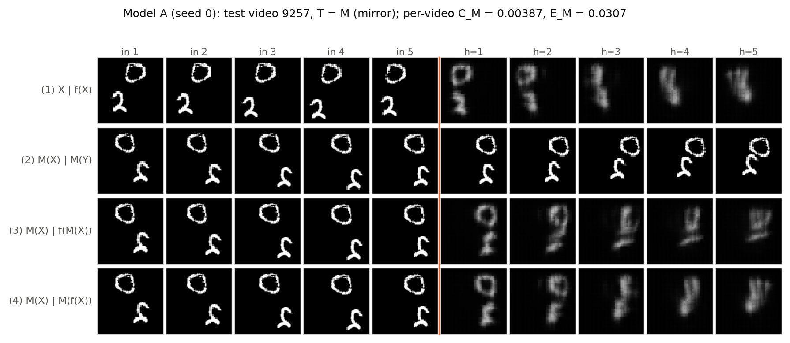
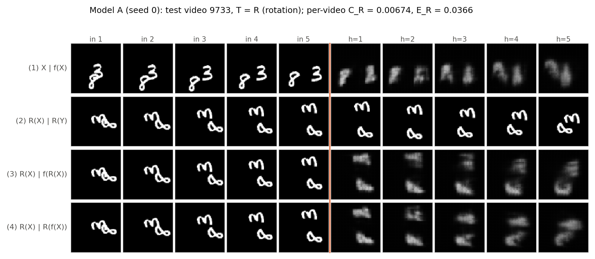
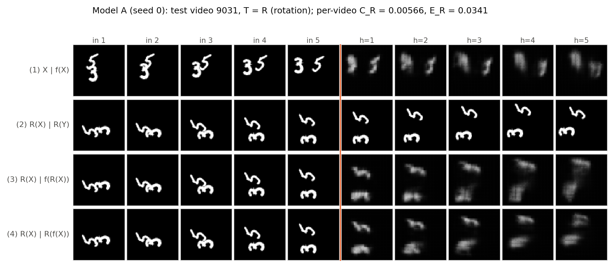
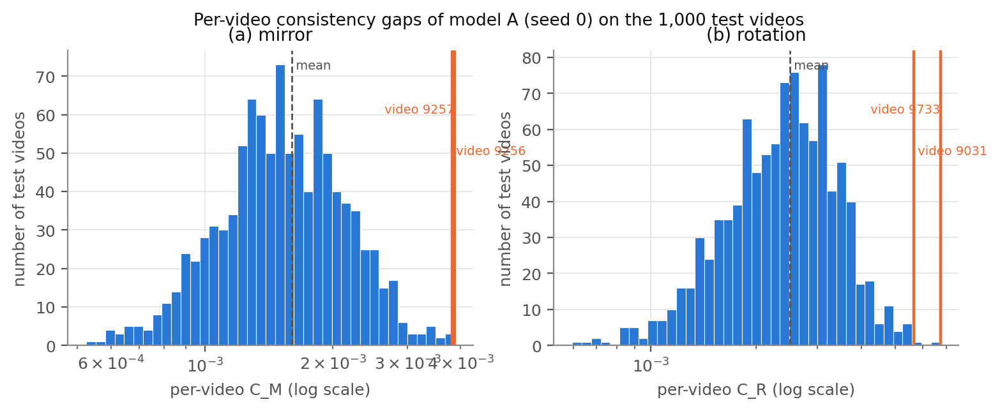
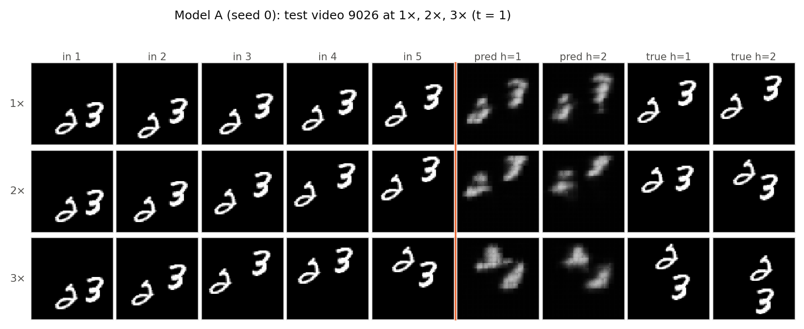

Against the reference predictors (Table 2): model A's E(5) = 0.0223 is about half of Blank's (0.0426) and about a third of Copy-last's (0.0641), and it beats both at every horizon. Copy-last is worse than Blank because a moving digit copied in the wrong place is penalised twice: once where it is drawn but is not, and once where it should be but is not. Model A therefore really predicts where the digits go, which neither reference can do.
Error over horizons: MSE grows monotonically from 0.0172 at h = 1 to 0.0261 at h = 5, about +52%. The growth slows with h (+0.0034, +0.0022, +0.0017, +0.0016 per step). Figure 2 shows why. Uncertainty about position and shape builds up, and under a squared-error loss the best response to uncertainty is to average over possibilities, so predictions become smoother and dimmer with each step. They are also fed back as inputs, so the network then works from its own blurred frames. Even at h = 5 model A is still 39% below Blank, so the predicted blobs remain in roughly the right places.
Overlaps: in video 9013 the 3 and the 2 overlap in the input and separate in the target. Model A does not separate them. The two digits melt into one bright blob, which barely moves and loses all digit shape by h = 4–5. In video 9007 the 6 and the 9 approach each other. The prediction pulls them together into a single vertical smear, whereas in the truth both digits move up and stay distinct. Once the two digits share pixels, the model can no longer tell which stroke belongs to which digit or which way each is moving. It falls back to a blurry average of both, which is what the squared-error loss rewards under that ambiguity.
Committed to the repository before model A was trained or any Testing-the-Baseline experiment was run: Question2/predictions/Q2.5_predictions.md, commit 48c2694.
Mirror test. Model A will mostly pass on motion: mirrored trajectories use directions that are common in training, and the convolutional motion rule is local. Mirrored digits, however, are new shapes. I expect E_M to be somewhat higher than the original E(5) (roughly 10–30% higher), with the extra error in the later horizons as shape distortion or blur rather than wrong motion. C_M will be clearly non-zero but well below E(5).
Rotation test. The same reasoning holds for the motion, but rotated digits look even less familiar than mirrored ones. I expect the rotation test to be "passed less well" than the mirror test: E_R > E_M and C_R > C_M. The difference should come from appearance, not from motion.
Speed. With an 8 px/step reach and 3.3 px/frame typical motion: 1×: comfortably inside reach. 2× (≈ 6.6 px/frame): still mostly inside the reach but near its edge, and faster than anything seen in training. I expect noticeable degradation: E(2) clearly higher than at 1×, but predictions still recognisably move the digits. 3× (≈ 10 px/frame, often above 8 px): beyond the one-step reach for most videos. I predict model A breaks down at 3×: digits will lag behind or stall near their last input position and blur or fade out. E(2) at 3× will approach or exceed Copy-last.
Table 3. Accuracy and consistency under mirror (M) and rotation (R) at 1×, t = 1, on the 1,000 test videos. Model A is mean (seed 0, seed 1).
{{T3}}



Blank and Copy-last have CM = CR = 0 exactly. An all-zero frame is unchanged by any pixel permutation, and "repeat the last frame" commutes with any transformation applied to all frames. Yet they are the worst predictors in Table 3 (ET = 0.0426 and 0.0641, against 0.0229–0.0240 for model A). So a small consistency gap on its own says nothing about whether a model has learned motion. Any predictor that ignores the content in a symmetric way, or does nothing at all, is perfectly consistent. CT only asks whether the model treats X and T(X) in the same way, not whether that way is right. The transformed error ET = MSE(f(T X), T Y) supplies the missing half: is the prediction on the transformed clip actually correct? The useful reading needs both together. A low CT together with ET close to the model's own E(5) means the same accurate rule is applied to transformed scenes. That is the case for model A here (EM is only 2.6% and ER 7.5% above its E(5)). A low CT with a high ET just means "consistently wrong".
In the original clip an 8 moves left towards the left wall and a 3 moves right. After the 90° anticlockwise rotation, the left wall becomes the bottom wall. The rotated 8 (an "∞") travels down-left, hits the bottom wall at about h = 2, and bounces back up. The rotated 3 (an "m") moves straight down at about 3.5 px/frame. Below, (row, column) is the intensity centroid of each digit in the 64×64 frame, from row (2) R(Y), row (3) f(R X) and row (4) R(f(X)):
| h=1 | h=2 | h=3 | h=4 | h=5 | |
|---|---|---|---|---|---|
| "∞" (rotated 8), truth | (46.6, 42.3) | (48.6, 39.3) | (46.6, 37.3) | (43.6, 34.3) | (40.6, 33.8) |
| "∞", row 3: f(R X) | (46.5, 40.6) | (48.1, 38.6) | (48.9, 36.2) | (49.0, 33.7) | (47.6, 32.1) |
| "∞", row 4: R(f(X)) | (46.6, 40.7) | (47.9, 38.4) | (47.6, 36.3) | (45.9, 34.4) | (42.8, 33.3) |
| "m" (rotated 3), truth | (12.7, 40.0) | (16.7, 41.0) | (20.7, 42.0) | (23.7, 42.0) | (26.9, 42.7) |
| "m", row 3 | (12.1, 38.6) | (11.7, 39.4) | (15.8, 40.4) | (20.1, 40.2) | (22.2, 40.8) |
| "m", row 4 | (13.2, 38.5) | (15.6, 39.1) | (19.7, 39.6) | (22.8, 39.6) | (25.0, 39.5) |
Rows 3 and 4 disagree in two specific ways:
So for this clip the model's account of the motion changes from "an 8 bounces off a wall and a 3 moves away" to "a sideways 8 slides along the floor and a sideways 3 hesitates and dissolves". The motion itself (a bounce off a wall, constant downward velocity) is just as common in training as the original. What is new is only that the shapes doing the moving are lying on their side.
Yes, rotation is harder than mirroring for model A, and the effect is consistent across both seeds. ER − E(5) = 0.0017 (+7.5%) against EM − E(5) = 0.0006 (+2.6%). CR (0.0028) is about 1.7× CM (0.0017), and the CR histogram in Figure 4 has a heavier right tail.
The cause is appearance, not motion. By Q2.1, neither transformation creates unfamiliar motion: every direction a mirrored or rotated trajectory contains is common in training, and speeds are unchanged. On 1,000 videos, the 90° rotation moves the direction histogram only slightly more than the mirror does (TV 0.10 against 0.08). Both are small next to how well every direction is represented. By Q2.2, what the two transformations change is the digits' appearance, and rotation changes it much more. A mirrored digit is still upright: it keeps its height-to-width ratio and its mostly vertical strokes. Only its left–right orientation flips, and some digits (0, 1, 8) are nearly mirror-symmetric anyway. A rotated digit lies on its side. It is wider than it is tall, its long strokes become horizontal, and no rotated digit resembles any upright training digit. Model A's motion "rule" is implemented by convolution filters tuned to upright strokes, and the extra error and inconsistency grow with how far the appearance moves from the training digits. That points to a motion rule that is partly entangled with appearance. The cleaner test is model B (Section 4): if symmetry augmentation removes the gap between EM and ER without changing the motion statistics, appearance is confirmed.
Table 4. Model A and Copy-last at 1×, 2× and 3× (t = 1). E(2) uses only the first two horizons, so it is comparable across speeds. At 3× only two target frames exist (16 and 19), so E(5) is not defined there. For reference, Blank scores E(2) = 0.0426 at every speed.
{{T4}}
Model A falls apart already at 2×, not at 3×. E(2) rises from 0.0189 at 1× to 0.0443 at 2× (2.3×) and 0.0515 at 3×. At 2× it is no better than predicting an empty frame (Blank: 0.0426), and at 3× it is worse than Blank. Both seeds agree (0.0428 and 0.0458 at 2×). It still beats Copy-last at every speed, but only because Copy-last is a very weak bar.
Agreement with the reach estimate: no. The typical 2× displacement (6.6 px/frame) is inside the 8 px reach, so Q2.3 and my Q2.5 prediction expected 2× to degrade but still work. The estimate missed two things. (1) Reach is only an upper bound on what the architecture could do. Whether the trained weights actually move content that far depends on training. Model A only ever saw displacements up to about 5 px/frame, so its filters implement those, and nothing in training asked them to move a digit 6–10 px per step. (2) One-way reach is not the limit on relating two positions. To track a digit, the old position (held in the recurrent state) and the new evidence (the input frame) must meet in some cell. They can travel towards each other from both ends: the input 2 cells to the output, and the layer-2 state 1 cell. So positions up to about 3 cells = 12 px apart can be compared in a single step, which already covers 3× (≈ 10 px). Section 4 confirms both points: speed augmentation alone (model C, same 8 px reach) repairs most of the 2× and 3× failure.
What the failure looks like (Figure 5, video 9026; intensity centroids of each digit):
No, Table 4 alone cannot separate the two explanations. Model A was trained only at 1×, where almost all motion is below 5 px/frame (Figure 1b), and its reach is 8 px. At 2× and 3× the motion is therefore both unfamiliar and close to or beyond the reach. Both hypotheses predict exactly the observed result, a collapse at 2× and 3×. The only hint is that model A already fails at 2×, where the typical displacement (6.6 px) is inside its reach. That suggests unfamiliarity is at least part of the story, but it cannot rule reach in or out at 3×.
Experiment that separates them: a 2×2 design that changes one factor at a time.
A cheaper diagnostic on the existing models is to bin the test videos by their measured per-frame displacement at 2×/3× and plot error against displacement. An architectural limit predicts a sharp rise in error near the reach (about 8 px), however much data is used. Unfamiliarity predicts errors that rise from the edge of the training range (about 5 px) and fall back once such speeds are added to training.